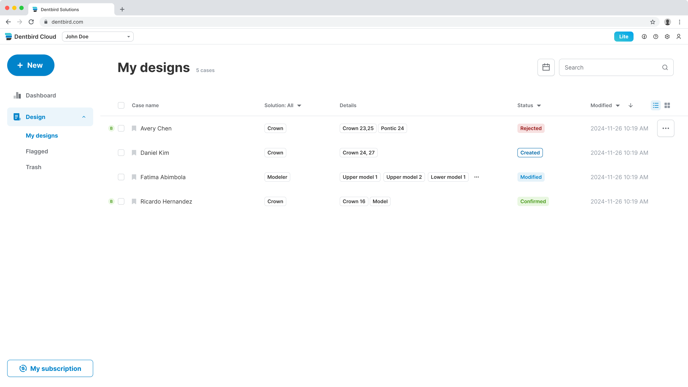
2023년 9월부터 이마고웍스에서 AI 기반 치과 CAD/CAM SaaS인 Dentbird의 프론트엔드를 맡고 있습니다. 구독·결제, 3D 뷰어, 외부 CAM 연동처럼 외부 의존이 많은 복잡한 화면을 만들고, AI로 코드가 빠르게 바뀌는 환경에서도 안전하게 개발할 수 있도록 아키텍처·디자인 패턴·상태관리와 검증 체계를 설계하는 것이 일의 중심입니다. 동시에 그 프론트엔드의 기반이 되는 모노레포·환경 분리·빌드·품질 자동화 같은 플랫폼 토대까지 한 제품 안에서 폭넓게 다뤄 왔습니다. 아래는 그중 대표적인 작업들의 배경·판단·회고입니다.
React TypeScript Next.js TanStack Query Three.js Electron Playwright Jest Docker AWS GitHub Actions Datadog
2025.11 ~ ·
Docker · Playwright · Claude · 런타임 Config · EC2 · qase
성과 — 명세 검증을 AI로 전량 자동화하려다 비결정성·비용의 한계를 확인하고 격리 재현 위 E2E로 자리 잡았고, 정성 평가로는 문제없던 테스트가 실제로는 결함을 잡지 못한다는 것을 mutation testing으로 확인한 뒤, 배포마다 검증을 통과해 나간 결함을 추적하는 CFR 대시보드를 직접 만들어 팀에서 운영 중
AI 도입으로 코드 변경 속도가 빨라진 만큼 회귀도 함께 늘었습니다.
격리 재현 환경은 앞서 직접 만든 도메인 통합 라이브러리와 런타임 환경 분리 위에서, 특정 커밋 시점의 클라이언트·서버·DB를 그대로 Docker로 띄우는 구조입니다.
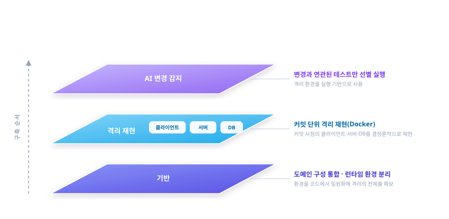
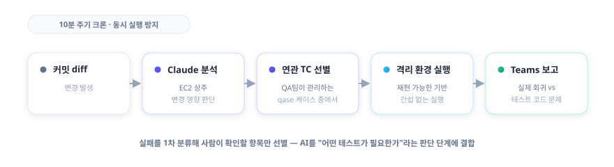
이렇게 했는데도 예정된 배포가 품질 기준을 통과하지 못해 밀렸습니다. 원인은 AI가 만든 테스트를 다시 AI가 평가하다 보니 겉으로는 문제없어 보여도 실제로는 결함을 잡지 못하는 테스트가 많았던 것입니다.
도구가 아니라 결정성, 그리고 무엇이 개선되고 무엇이 나빠지는지 숫자로 보는 것이 핵심이었습니다. AI는 테스트를 빠르게 만들어 주지만, AI가 만든 것을 AI가 평가하면 못 잡는 결함이 그대로 남고 측정하지 않으면 그것을 끝내 알 수 없습니다. 좋은 테스트는 구현이 아니라 의도한 명세를 검증해야 한다는 것도 이 과정에서 분명해졌습니다.
AI 변경 감지에도 한계가 있었습니다. 어떤 회귀는 오히려 AI 리뷰가 통과시킨 잘못된 테스트에서 나왔습니다 — 기획 의도가 코드에도 테스트에도 없이 티켓 코멘트에만 있었던 탓입니다. 직접 바로잡았고, AI를 판단에 쓸수록 그 판단이 맥락 없이 틀릴 수 있다는 것까지 함께 설계해야 한다는 것을 배웠습니다. EC2 상시 구동의 보안·안정성 부담을 줄이려 변경 감지는 이후 로컬 데일리 E2E로 옮겼습니다.
2025.10 ~ 2026.06 ·
React · TanStack Query · IntersectionObserver · Context API
성과 — 운영 중 발생한 무한 재요청 회귀를 공유 캐시 구조로 근절(재마운트돼도 중복 요청 없음을 회귀 테스트로 고정), 썸네일을 지연 로딩과 요청 배치로 최적화해 “N장 = N요청” 구조를 해소
케이스 목록은 사용자가 가장 자주 보는 화면이고 썸네일이 수십 장 표시됩니다.
onError 폭주를 억제하는 재시도 1회
제한을 보조 장치로 배치, 성공 시 실패 횟수를 초기화하면 같은
영구 오류가 반복되므로 의도적으로 초기화하지 않음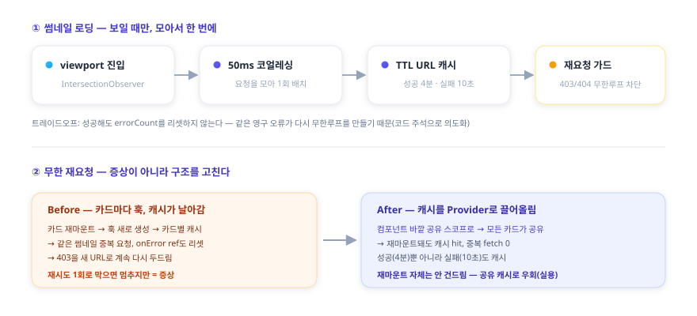
무한 재요청은 재시도 횟수만 제한해도 멈춥니다. 하지만 그것은 증상이고, 진짜 원인은 재마운트마다 훅이 새로 생겨 캐시가 소실되고 같은 오류를 다시 호출하는 구조였습니다. 재마운트 자체를 없애는 것은 더 큰 공사라 공유 캐시로 우회하는 실용적 선택을 했습니다 — 증상을 덮을지 구조를 고칠지 사이에서 비용 대비 효과가 가장 큰 지점을 고른 작업입니다.
설계에서 하나 더 신경 쓴 것은 실패를 다루는 방식입니다. 보통 캐시는 성공만 담지만 여기서는 403 같은 영구 오류도 짧게 캐시했습니다. 실패를 기억하지 않으면 재마운트마다 같은 오류를 다시 호출하기 때문입니다.
2023.09 ~ 2025.07 ·
React · TypeScript · TanStack Query
성과 — 모든 에러를 한 덩어리로 처리하던 구조를 예측 가능/불가능 에러로 분리해, 한 기능의 실패가 전체 페이지를 중단시키지 않도록 개선(BusinessLogicError·ErrorBoundary 체계는 모노레포 이관 후에도 존속)
일회성 크레딧에서 반복 구독으로 전환하는 시점에 구독·결제 화면(플랜 업그레이드·좌석 구매·취소·재개·쿠폰·결제수단·히스토리)을 전담했습니다. 당시 조직에는 에러 처리 정의가 없었습니다.
HTTP 200 · success:false · errorCode로 내려주는 비즈니스
에러는 실패가 아니라 의도된 결과이므로 폴백 UI로 뭉뚱그리지 않음BusinessLogicError 커스텀 클래스로 throw하고
.when(errorCode, action).otherwise() 체인으로 분기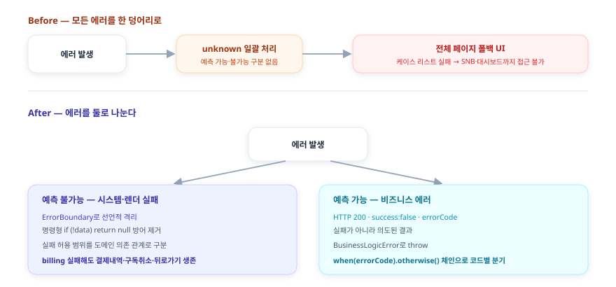
에러 처리의 출발점은 정교한 도구가 아니라 에러를 구분 짓는
일이었습니다. 예측 가능한 실패와 불가능한 실패를 나누지 않으면 잘 만든
ErrorBoundary를 두어도 결국 같은 폴백으로 처리됩니다. 이 구조는
모노레포로 이관된 뒤에도 BusinessLogicError와
withErrorBoundary HOC로 남아 있습니다.
다만 조직 차원의 에러 처리 정의는 여전히 없고, 무엇이 실패해도 무엇은 살아남아야 하는가를 결제 데이터 의존 관계까지 끊어내는 설계는 당시 출시 우선순위와 설계 역량의 한계로 끝까지 가지 못했습니다. 이 문제의식은 이후 관측·복원력 표준화에서 조직 차원으로 이어갔습니다. 에러 응답 형식을 서버가 HTTP 200에 success:false로 내려줄지 4xx·5xx로 내려줄지부터 합의가 필요했다는 점에서, 에러 처리는 프론트엔드 혼자 정할 수 없고 서버와의 계약이 전제라는 것도 확인했습니다.
2024.07 ~ 2025.12, 이후 단독 운영 ·
Electron · React · TypeScript · Datadog
성과 — 좌표계·전달 방식이 제각각인 외부 CAM 12종을 단일 연동 인터페이스로 통합, 앱마다 다르던 설치 감지 타임아웃을 3초로 맞추고 비차단 안내로 통일, Windows 전용 CAM을 Mac에서 재현하는 검증 도구로 원인을 우리 쪽과 CAM 쪽으로 구분
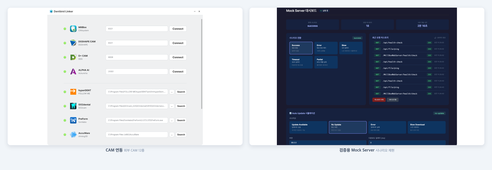
Dentbird에서 디자인한 보철 케이스를 사용자 PC의 외부 CAM 소프트웨어로 보내는 사내 연동 앱을 단독 설계·운영했습니다. 연동은 파일을 전달하는 데이터 채널과 앱 설치·실행 여부를 아는 감지 채널 두 축으로 나뉘고, 이 케이스는 둘을 모두 다룹니다.
여러 통신 방식을 구현 속도가 아니라 장기 안정성 기준으로 비교했습니다.
| 방안 | 검토 결과 |
|---|---|
| WebSocket 로컬 서버 | 구현은 가장 빠르나 곧 LNA 적용 대상 → 1~2년 후 재차단될 단기 해법, 탈락 |
| HTTPS 로컬 서버 | 인증서·배포 부담 + 같은 LNA 사정 → 탈락 |
| Custom Protocol | HTTP 요청이 아니라 LNA 적용 대상이 아님 → 채택 |
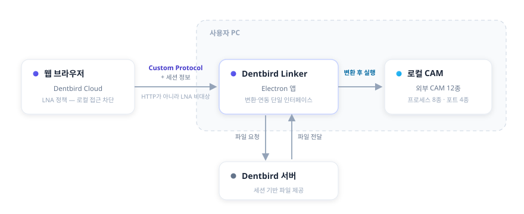
연동한 CAM 중 하나에서 보철 가장자리(마진)가 물결처럼 어긋나 들어가는 문제가 접수됐습니다. 이 CAM은 Windows 전용이고 3D 뷰포트가 GPU 렌더라 Mac에서는 결과를 볼 수 없었습니다.
두 번째 축인 감지 채널입니다. 브라우저는 LNA 정책 때문에 로컬 헬스체크로 앱 실행을 직접 확인할 수 없어, 창 포커스 변화 같은 휴리스틱으로 추정할 수밖에 없습니다. 두 방향의 오탐이 있었습니다.
false-negative — 앱이 이미 실행 중이면 OS가 기존 창으로 라우팅해 포커스 변화가 없어 ’미설치’로 오인 → 설치돼 있는데 설치 모달 표시
false-positive — 로딩 중 사용자가 DevTools를 열어 포커스가 빠지면 ’설치됨’으로 오인 → 미설치인데 다운로드 안내 억제
감지를 완벽하게 만들지 않고 틀려도 사용자가 막히지 않는 쪽으로 정책 통일
batch 2.5초·Linker 10초로 달랐던 감지 타임아웃을 3초로 일치시키고, 미감지면 미설치로 간주하되 설치 안내를 항상 비차단(non-trapping)으로 표시해 어떤 경우에도 다운로드가 가능하게 함
DevTools로 인한 false-positive는 타임아웃으로 막지 못하는 한계임을 인지한 채 수용
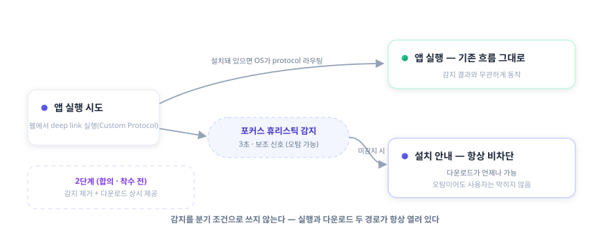
근본 해법으로는 Zoom·Slack 같은 설치형 서비스처럼 감지 판정 자체를 없애고 다운로드 안내를 항상 제공하되 설치돼 있으면 자동 실행되는 방식을 제안해 기획·QA와 합의했고, 아직 착수 전입니다.
처음엔 로컬 서버 방식이 핵심이었지만 정책 변화로 더는 쓸 수 없게 됐고, 직접 폐기한 뒤 Custom Protocol 기반으로 옮겼습니다. “당장 되는 방법”이 아니라 “정책이 또 바뀌어도 흔들리지 않는 방법”을 고른 판단이 이 프로젝트의 핵심이었습니다. 브라우저·OS의 실행환경 정책(LNA, 포커스, 프로토콜 핸들러)이 웹과 로컬의 경계에서 무엇을 막고 허용하는지를 이 과정에서 깊이 이해했습니다.
감지에서도 같은 태도를 얻었습니다. 휴리스틱은 늘 틀릴 수 있으므로, 감지를 완벽하게 만들려 애쓰기보다 틀려도 사용자가 막히지 않도록 설계하는 쪽이 더 단단했습니다. 감지 판정 자체를 없애는 방향까지 제안하게 된 것은, 휴리스틱 위에 보강을 더하는 방식으로는 구조적 한계를 넘지 못한다는 것을 같은 문제가 다시 열리며 겪었기 때문입니다.
2023.09 ~ 2025.10 ·
NX · Module Federation · iframe · postMessage
성과 — 4개 서비스에 중복되던 공통 기능 4종을 same-origin iframe 단일 구현으로 통합해 4개월간 유지, 배포 단위와 조직 제약이 바뀔 때마다 통합 방식을 다시 선택
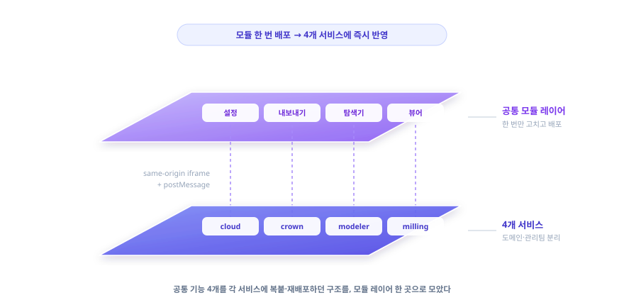
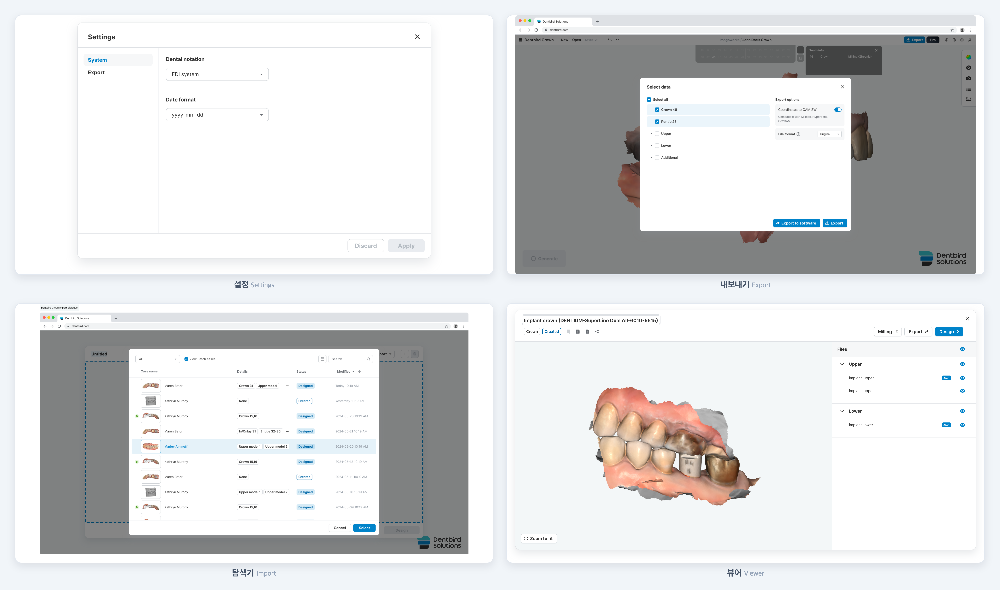
4개 서비스(cloud·crown·modeler·milling)가 공유하던 공통 기능 4개(설정·내보내기·탐색기·뷰어)의 변경 비용이 컸습니다.
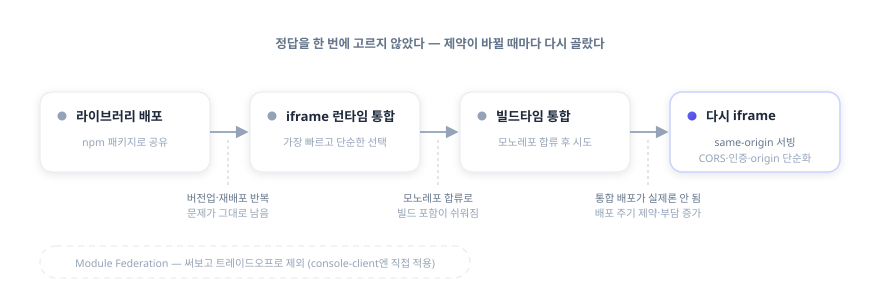
Module Federation도 후보였지만 다른 기능에 적용해본 경험상 초기 설정이 복잡하고 모노레포가 아닌 소비처에서 부담이 커 이 건에서는 제외했습니다 — 몰라서가 아니라 적용해 본 뒤 비용 대비 이득으로 판단한 것입니다. console-client에는 Module Federation을 직접 적용했습니다.
같은 문제를 라이브러리 → iframe → 빌드타임 통합 → 다시 iframe으로 세 번 다르게 풀었습니다. 매번 그때 더 낫다고 본 방법을 택했지만, 운영해보면 조직·배포 제약이 다른 답을 가리켰습니다. 빌드타임 통합은 기술적으로 깔끔했어도 사내 배포 주기와 맞지 않아 결국 same-origin iframe으로 돌아왔습니다. 이 과정에서 “정답 기술”은 없고 제약에 맞는 선택만 있다는 것, 더 나아 보이는 방법도 운영해보기 전엔 모른다는 것을 배웠습니다.
이 통합은 4개월간 공통 기능 4종을 단일 구현으로 유지했고, 이후 Vite로 표준이 통일되며 그쪽으로 정리됐습니다. 별개로 사내 공통 디자인 시스템(MUI 기반)에도 DatePicker 확장(닫힘 핸들러 덮어쓰기 버그 수정·placeholder·클릭 핸들러 노출) 등 공통 컴포넌트 기여와 v3.0.0 릴리스 관리를 했습니다.